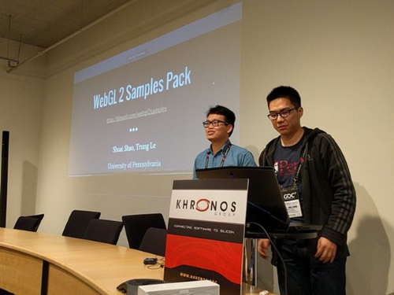
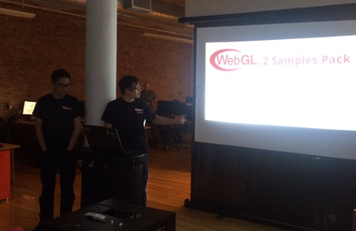
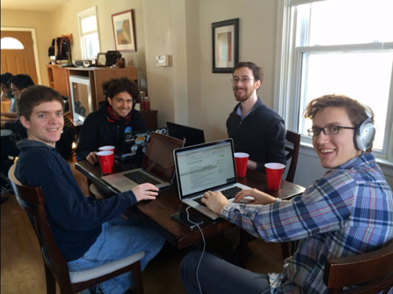
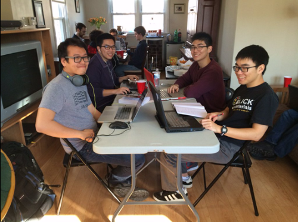

Independent Study Projects


DMD and CGGT students:
I am seeking students interested in collaborating on an independent study in open-source software development in Spring 2017. The goal is to create useful libraries, applications, or teaching material to make impact in the graphics industry.
Topics of interest are:
- glTF - the runtime asset format for WebGL. Projects may include importers and exporters for modeling tools, optimization pipelines, extensions, and reference implementations for loaders and renderers.
- WebGL - JavaScript API for hardware-accelerated graphics on the web. Projects may include compression libraries, debugging and profiling tools, and tutorials and samples.
- Cesium - an open-source JavaScript library for 3D globes. Projects may include streaming massive 3D models, rendering algorithms and optimizations, and visualization demos.
In addition to learning deeply about the selected topic, you will also learn software development best practices and open-source culture. Your work is likely to get significant industry attention and make you very attractive as a job candidate.
See below for projects from previous semesters.
Please email me to learn more. I can only advise a limited number of students per semester.
Patrick Cozzi
pjcozzi@siggraph.org
Past Projects
|
|
Spring 2016: WebGL 2 Samples Pack by Shuai Shao (Shrek) and Trung Le.
Shrek and Trung were invited by Khronos to present this project at the WebGL + glTF BOF at GDC. They were then invited to present at the WebGL Meetup in NYC.   Trung spent the following summer at Epic Games working on tools for Unreal. Shrek spent the summer at BioDigital and contributed to the SceneJS WebGL engine. |
|
|
Spring 2016: glTF Pipeline by Richard Lee.
This project is now being adopted by industry, including significant contributions from the Cesium team such as prebaking Ambient Occlusion and mesh compression. Richard spent the following summer at Oculus. |
Code Sprints
|
As part of the independent study projects, we organize one-day code sprints that bring together independent study students, CIS 565 students and TAs, and developers from industry to plan, code, eat, and play original 8-bit NES games.   |
Back to my main page